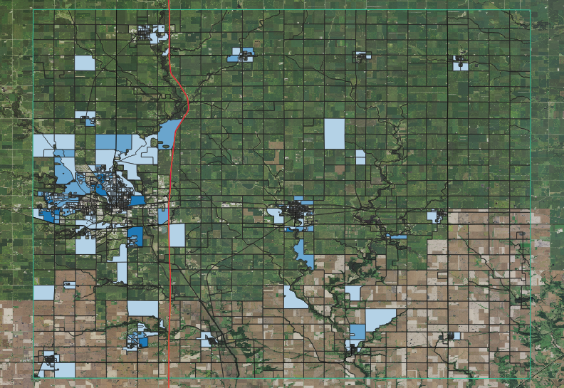

Map of absolute population of ages below 18 in Story County, Iowa

This is a map of Story County showing the levels of population of people below the age of 18 per census block. It comes as no surprise that most of the population is concentrated around and in urban areas, as these are absolute values.